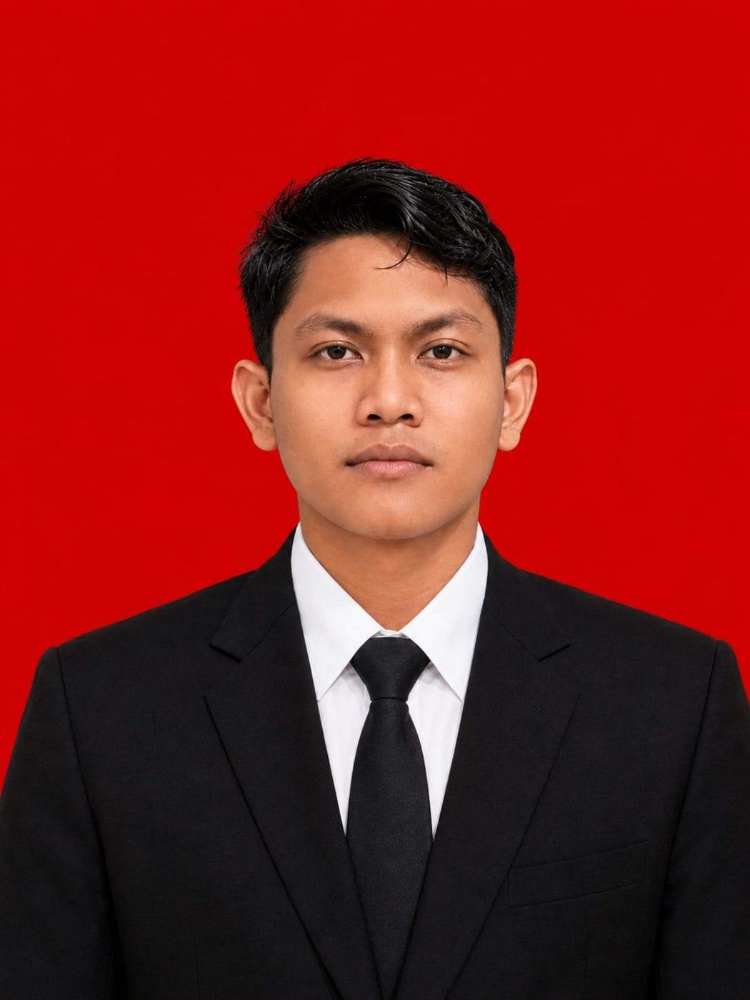
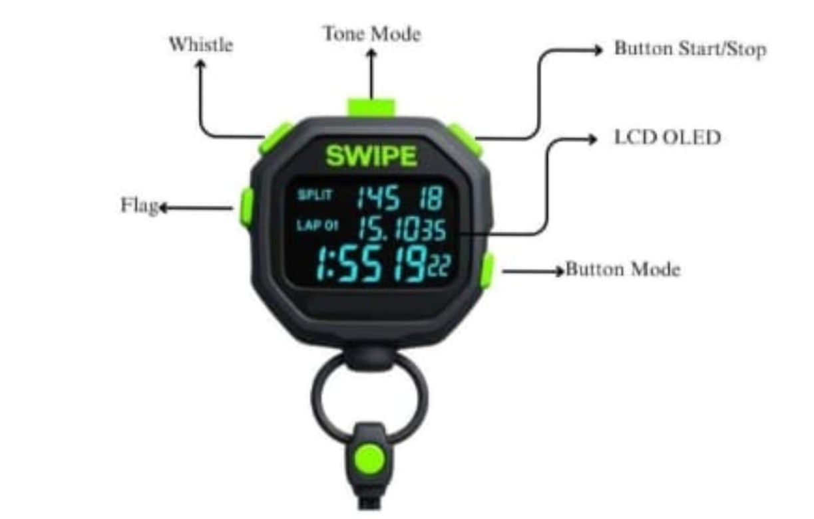
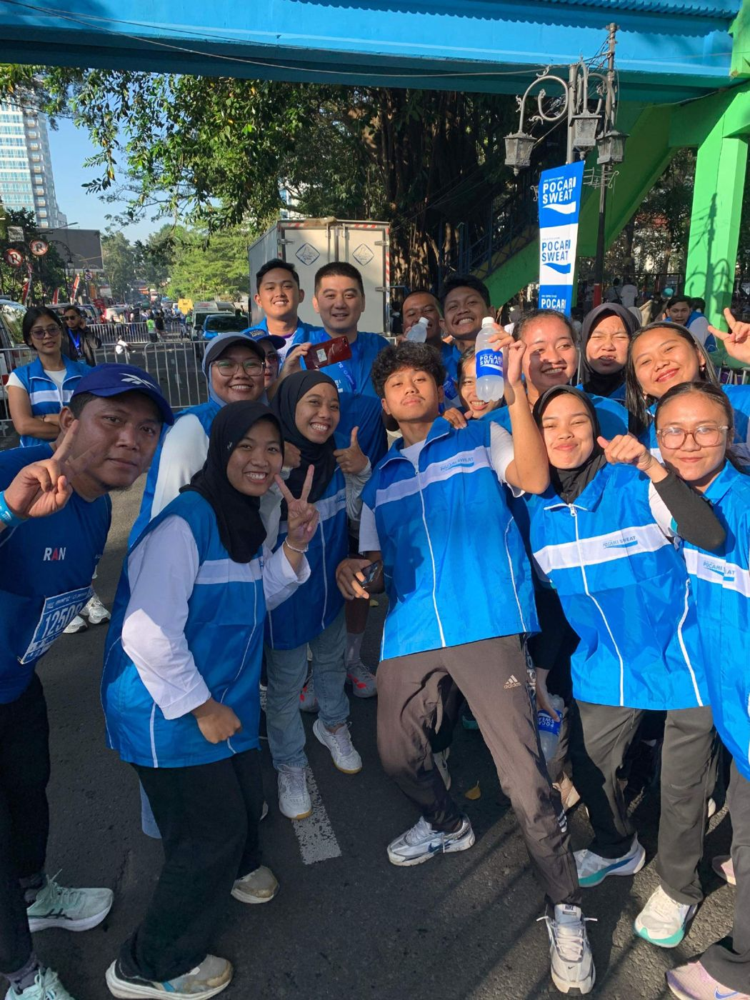
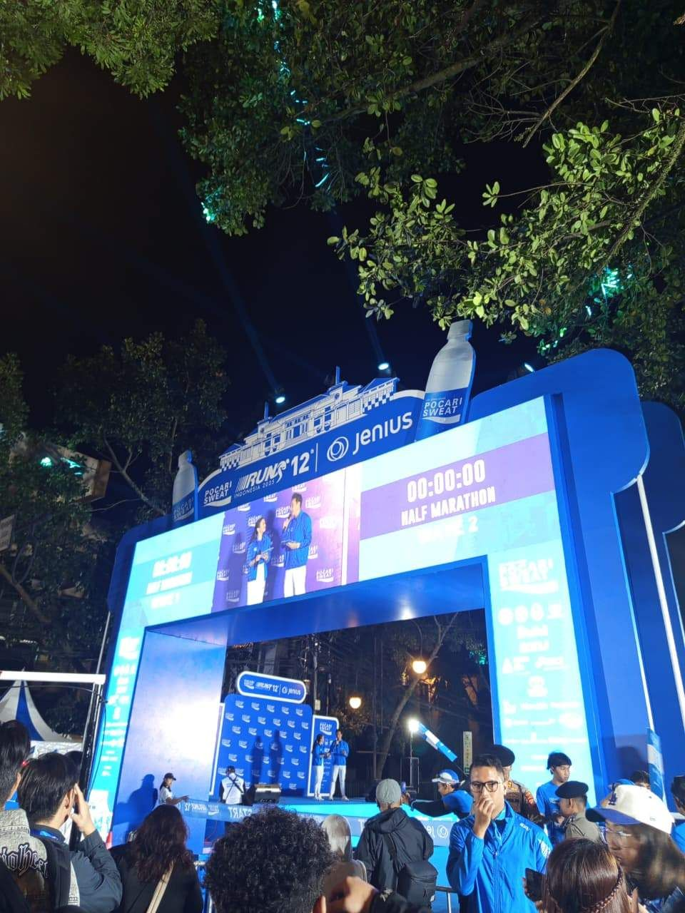
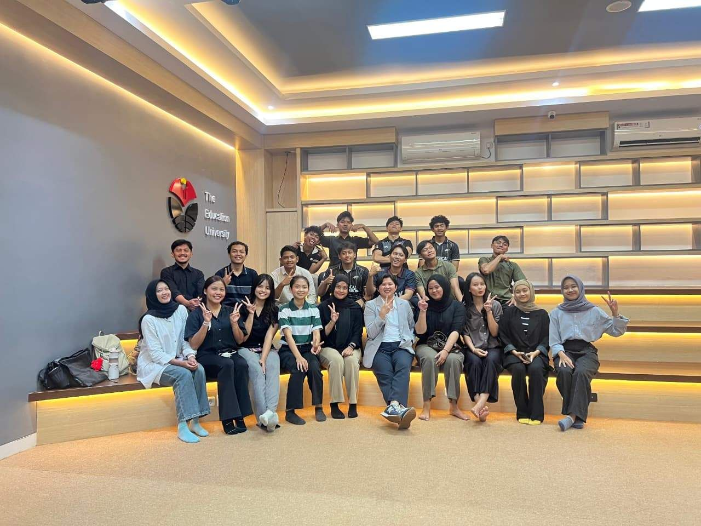

Reputable Journal & Conference Mentoring
Manuscript writing, quantitative data analysis, bibliometric mapping, and publication in SINTA, Scopus and international proceedings.
Sport Education · Universitas Pendidikan Indonesia
Sport Education Researcher / Academic Writing Mentor / Sport Project Specialist
Bridging evidence-based sport science, reputable academic publishing, and dynamic sports event management.

Ongoing
Fast-Track Master's Student in Sport Education
Universitas Pendidikan Indonesia (UPI)
Cum Laude
Bachelor of Physical Education
GPA 3.83 / 4.00
Research Output
International Conference Presenter
& Reputable Journal Author
01 — About
A young academic and physical-education practitioner working where motor development, sport psychology and modern PE pedagogy meet.
My work centres on motor development, sport psychology and character formation, contemporary physical-education pedagogy, and sport project management. I bring advanced quantitative analysis, including bootstrapped and Bayesian inference, into classroom, coaching and event settings so that findings translate into practice.
Manuscript writing, quantitative data analysis, bibliometric mapping, and publication in SINTA, Scopus and international proceedings.
Experimental and correlational designs, Bayesian and bootstrap analysis, and evaluation of PJOK learning outcomes.
Operational management of national-scale sporting events and swimming coaching grounded in sport science.
02 — Research
11th ICSDP 2026 · Sole & Corresponding Author
Department of Sports Education, School of Postgraduate Studies, UPI · International Conference on Sport and Development Peace
95% BCa CI · 5,000 bootstrap resamples[−0.471, 0.279]
Cross-sectional correlational design · TCAM & Indonesian MSOS
Jurnal Porkes 2025 · First & Corresponding Author
Vol. 8, No. 1, pp. 01–09, April 2025 · with Ricky Wibowo & Mukhlisin (FPOK UPI)
One-group pretest–posttest · Modified Bass Test & T-Test (TKSI Phase B)
03 — Featured Project · PKM-KC 2025
Smart Whistle Integrated with Precision Electronics

A multifunctional whistle powered by WhistleSync technology that lets PE teachers and coaches signal, time and track laps from one handheld device.
Siti Zakiatul Balqis
Team Leader · Physical Education
Tio Ilham Wahyudi
Research & PE Dev. · PGSD Penjas
Alifa Prayudio Dava Nugroho
Industrial Automation & Robotics
Raihan Tristan Pakpahan
PJKR
Amelia Putri Sylfia
Visual Communication Design
04 — Experience
Technique and physical-conditioning development using a sport-science approach.
On-field operations at a national-scale running event.
Faculty and Staff Sports Week, Universitas Pendidikan Indonesia.
Field operations for the PGSD Physical Education movement festival.
Technical course coordination and running-event operations.



05 — Credentials
KEMENPORA RI — sport-culture policy, physical literacy, community sport management, first aid for sports injuries.
ASEAN Foundation & Google.org — generative AI, AI ethics and academic plagiarism, data security, AI-based tools.
MicroMentor by Mercy Corps & Mastercard Center for Inclusive Growth.
International Conference on Sport and Development Peace · Sports Education (POR), School of Postgraduate Studies, UPI.
Guest Lecture · School of Postgraduate Studies, UPI.
Guest Lecture · FPOK UPI.
Adjunct Professor Program · Universiti Malaya & FPOK UPI.


06 — Skills
Quantitative & Statistical Analytics
IBM SPSS Statistics · Stata · SmartPLS · Python · Microsoft Excel
Bibliometrics & Academic Research
VOSviewer · Publish or Perish (Harzing) · Mendeley · Google Scholar · ORCID
Creative Media & Visual Design
Canva · Adobe Lightroom · CapCut · Picsart · Snapseed · Microsoft PowerPoint
07 — Contact
Journal and conference writing mentorship, sport science research collaboration, and sports event management or coaching.